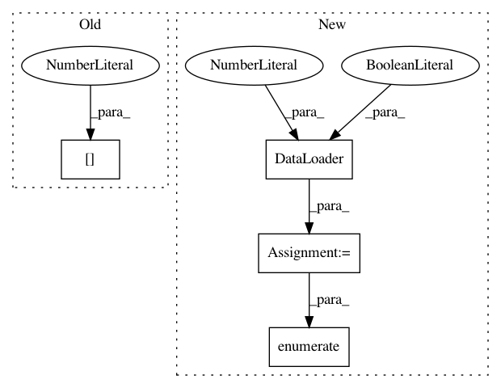

62b9b6ffdcba80685b7374b5d0e46d2c05873be7,pyprob/nn/inference_network.py,InferenceNetwork,optimize,#InferenceNetwork#Any#Any#Any#Any#Any#Any#Any#Any#Any#Any#Any#Any#,260
Before Change
def optimize(self, num_traces, batch_generator, batch_size=64, valid_interval=1000, optimizer_type=Optimizer.ADAM, learning_rate=0.0001, momentum=0.9, weight_decay=1e-5, auto_save_file_name_prefix=None, auto_save_interval_sec=600, distributed_backend=None, distributed_params_sync_interval=10000, *args, **kwargs):
if not self._layers_initialized:
self._init_layers_observe_embedding(self._observe_embeddings, example_trace=next(batch_generator.batches(1))[0])
self._init_layers()
self._layers_initialized = True
self._generate_valid_batch(batch_generator)
After Change
loss_min_str = ""
time_since_loss_min_str = ""
last_auto_save_time = time.time() - auto_save_interval_sec
dataloader = DataLoader(dataset, batch_size=batch_size, shuffle=True, num_workers=4, collate_fn=lambda x: Batch(x))
while not stop:
epoch += 1
for i_batch, batch in enumerate(dataloader):
// batch_generator.batches(pre_load_next=(distributed_world_size == 1)):
iteration += 1
In pattern: SUPERPATTERN
Frequency: 3
Non-data size: 4
Instances
Project Name: pyprob/pyprob
Commit Name: 62b9b6ffdcba80685b7374b5d0e46d2c05873be7
Time: 2018-12-04
Author: atilimgunes.baydin@gmail.com
File Name: pyprob/nn/inference_network.py
Class Name: InferenceNetwork
Method Name: optimize
Project Name: rusty1s/pytorch_geometric
Commit Name: 3e11eb52b9b370bf9df6bf396e91ef94bf4055b8
Time: 2017-11-02
Author: matthias.fey@tu-dortmund.de
File Name: examples/mnist_superpixel_75.py
Class Name:
Method Name:
Project Name: pyprob/pyprob
Commit Name: 62b9b6ffdcba80685b7374b5d0e46d2c05873be7
Time: 2018-12-04
Author: atilimgunes.baydin@gmail.com
File Name: pyprob/nn/inference_network.py
Class Name: InferenceNetwork
Method Name: _pre_generate_layers